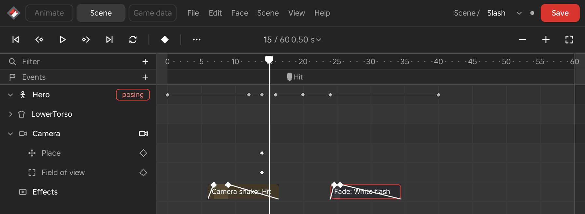
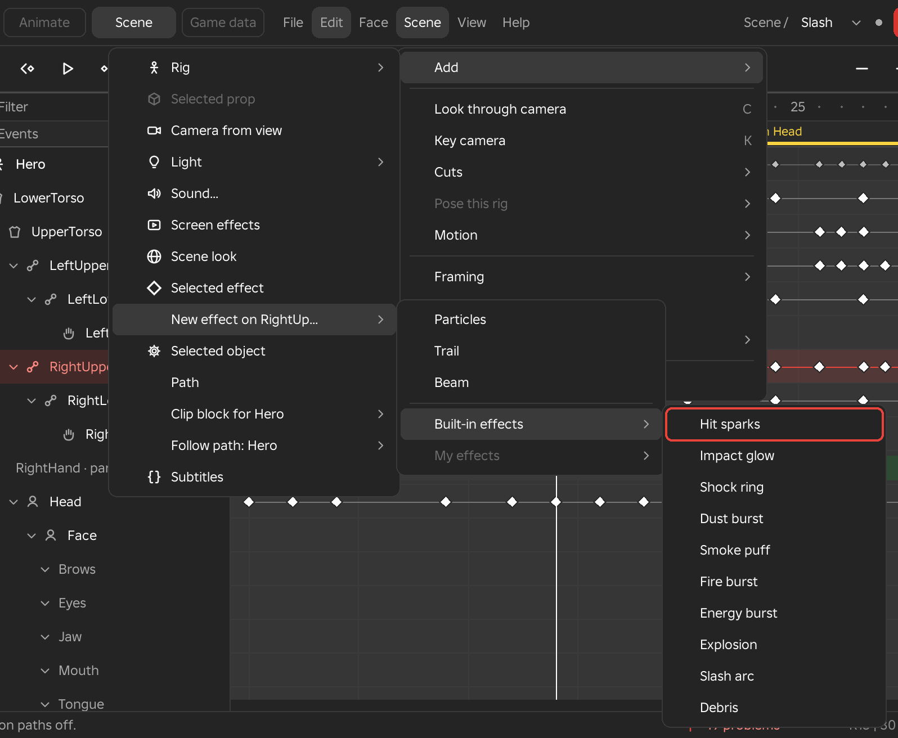
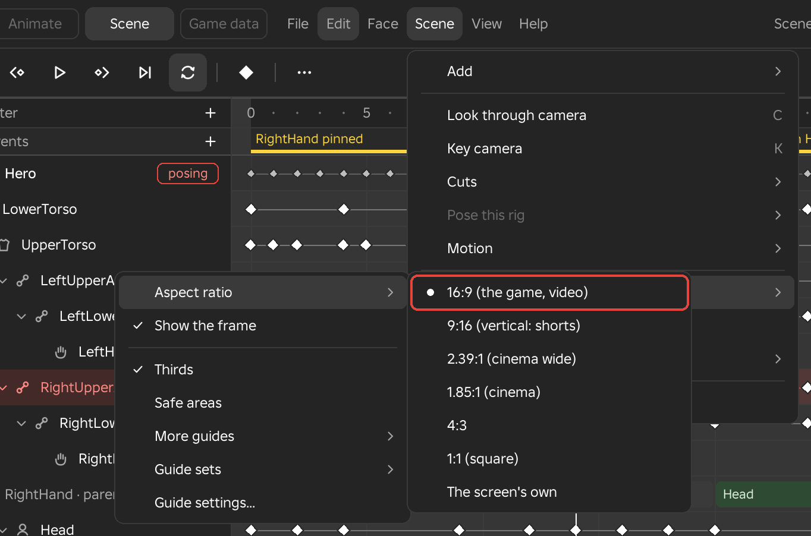
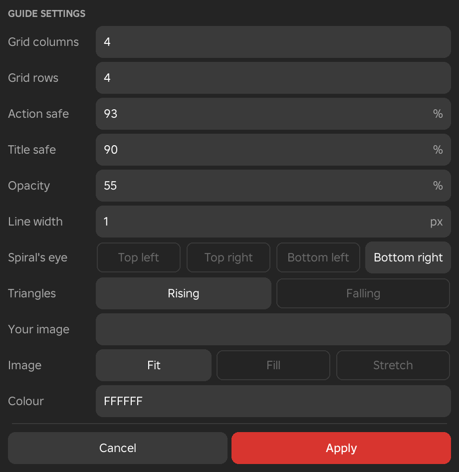
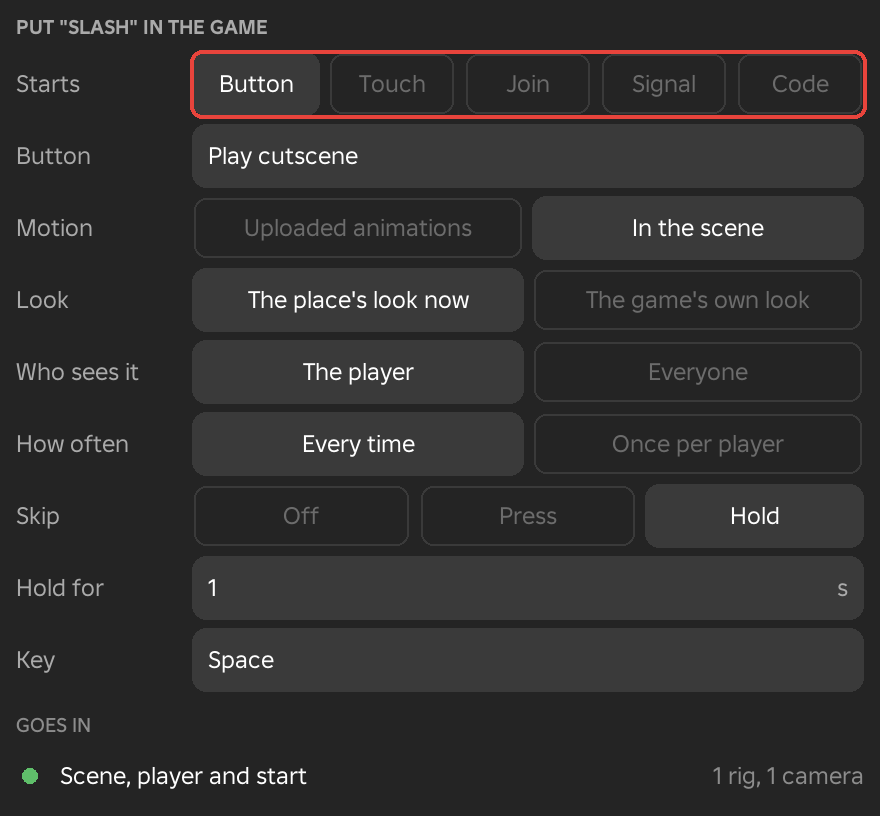

Scene Menu
The Scene menu holds everything that turns one animation into a scene: adding rigs, props, cameras, lights, sounds, effects and subtitles, looking through and cutting between cameras, moving props and cameras along paths, framing the shot, and putting the finished scene in the game. It shows in the Scene workspace.
About Scenes
A scene is an animation with more than one thing in it. It begins as soon as you add anything to the animation that is open: another rig, a prop, a camera, a light, a sound, a screen effect, an effect, a path or subtitles. Everything shares the one timeline, so a camera move, a door opening and two characters fighting are all keyed against the same frames, and one Save keeps all of it.
Every item in a scene has a row in the track list. A rig is drawn as a figure, a prop as a box, a camera as a camera, a light as a bulb and a sound as a speaker, and screen effects, the scene look, effects and paths have icons of their own. The first item is the rig the animation was opened on, and it stays until the animation is closed. At the right end of most rows is a key diamond that keys the item at the playhead, and a camera's row has a button that looks through it. Rows that hold values open to rows of their own, so a camera shows its place and field of view and a light shows its brightness, colour and range. Click a row to select its item, press F2 to rename a prop, camera or other item, and use the row's right-click menu for the commands that belong to it.
Only one rig is posed at a time. The posed rig carries a "posing" tag and opens to its limbs, and the handles, IK, the Inspector, the Curve editor and every pose tool work on it. The other rigs fold to one lane of diamonds and play their own keys. Select another rig, or click one of its limbs in the viewport, to pose that rig instead.
Keys on a scene row behave like keys on a limb. Click a key to select it, hold Shift to add more, drag to move them, and press Del to delete them. Typing a value in the Inspector keys it at the playhead, and the value eases into the next key like any other.
Props, lights, effects and other objects in a scene are the real objects of your place. Framez moves them while the scene is open and puts them back exactly as it found them when their item leaves the scene or the animation closes. Cameras are drawn by Framez as small camera bodies in the viewport and are never saved with the place.
Saving a Scene
- Menu
- File ‣ Save
- Shortcut
- Ctrl+S
Save stores every rig's clip and the scene itself in one step. Each rig's clip is saved under its own rig as an ordinary animation, so Roblox's animation editor can open it too. The scene's record, which holds the props, cameras, lights, sounds, effects, cuts and everything else, is kept in ServerStorage under FramezScenes, named after the scene. Opening any one of the rigs' clips afterwards opens the whole scene.
A rig that has no keys still gets a clip, which holds its resting pose at frame 0, so a character that only stands in the shot is saved with the rest.
See Also
Put in the Game writes a saved scene into the game. Scene from the game brings back a scene that was put in the game.
Add
Add puts another item on the scene's timeline. The same list opens from the + button at the right end of the track list's Filter strip.
Add to the Scene
- Menu
- Scene ‣ Add
- Track list ‣ + button at the right of the Filter strip
- Workspace
- Scene
Each row of Add creates one kind of item, and each item gets a row of its own on the timeline. The first thing you add turns the open animation into a scene. Add needs an open animation, and Framez says so when there is none.
The sections below describe the rows in the order they appear in the menu.
Options
- Rig
- Another character with a clip of its own. See Rig.
- Selected prop
- The part or model selected in the Explorer, moved through the scene by keys. See Selected Prop.
- Camera from view
- A camera placed where the viewport is now. See Camera from View.
- Light
- A light that is already in the place, with its brightness, colour and range keyed. See Light.
- Sound...
- A sound from an asset id or from the place. See Sound.
- Effect
- A camera shake, fade, vignette or letterbox that lands at the playhead with its length and fades already set. See Effects.
- Screen effects
- Letterbox bars, a vignette, a fade, camera shake and a subtitle line over the shot. See Screen Effects.
- Scene look
- The time of day, fog, colour grade, bloom and depth of field. See Scene Look.
- Selected effect
- The particle effect selected in the Explorer, fired on the frames you choose. See Selected Effect.
- New effect on a limb
- A new effect made on the selected limb, from Roblox's defaults, from the built-in effects or from your own saved ones. See New Effect on a Limb.
- Selected object
- Any other object, so that its properties can be keyed. See Selected Object.
- Path
- A path drawn by clicking points in the viewport. See Path.
- Clip block for the rig
- A saved clip played as a block over your keys. See Clip Block.
- Follow path
- The open rig walks or runs along a path, or walks it with one of its own clips. See Follow Path.
- Subtitles
- A row of timed dialogue lines. See Subtitles.

Rig
- Menu
- Scene ‣ Add ‣ Rig ‣ the rig's name
- Track list ‣ + ‣ Rig
- Workspace
- Scene
Rig adds another character to the scene. The list shows every rig in the Workspace that is not in the scene yet, meaning a model whose parts are joined by Motor6D joints. Choosing one gives it an empty clip of its own, and from then on it plays its own keys beside the rig you opened. A model with no joints is refused with a message that suggests adding it as a prop.
Rigs kept in ServerStorage or ReplicatedStorage are listed under From storage (a copy). Choosing one puts a copy in the Workspace in front of the camera, removes any scripts from the copy, anchors its root part and adds the copy to the scene. The stored original stays where it is.
Each rig's clip is saved under the rig's name, so two rigs cannot share one. A rig that joins with the name of a rig already in the scene is renamed with a number, and a second Noob becomes Noob2.
Example
For example, to animate a grab between two characters, open the attacker's rig, add the victim from the list, and pose each of them in turn with Pose This Rig.
See Also
Pose This Rig chooses which rig you are posing.
Selected Prop
- Menu
- Scene ‣ Add ‣ Selected prop
- Track list ‣ + ‣ Selected prop
- Workspace
- Scene
A prop is any part or model without joints that moves through the scene, such as a crate, a door, a weapon on a table or a vehicle. Select it in the Explorer and choose Selected prop. Once a valid part or model is selected, the row reads Prop followed by its name. Before that the row is greyed and gives the reason, for example that nothing is selected, that the selection is the terrain, that it is in the scene already, or that it has joints and should be added as a rig.
The prop gets a row that shows its keys. Select the prop, by its row or by clicking it in the viewport, and move it with Studio's own Move and Rotate tools (Ctrl+2 and Ctrl+4). When it comes to rest, the new place is keyed at the playhead if Auto key is on. With Auto key off, press K to key it. The Inspector shows the prop's place as numbers, and typing a position or rotation there keys it as well.
New props move on a smooth path between their keys, which Moves can change to straight lines.
Notes
While a prop is in the scene, Framez places it from its keys. When the item leaves the scene, or the animation is closed, the prop goes back to the place and look it had when it joined.
See Also
A Prop's Look keys its transparency, scale and colour. Follow a Part makes a prop ride a rig's hand or head.
A Prop's Look
- Menu
- Inspector ‣ a selected prop ‣ Look and Colour
- Workspace
- Scene
A prop's Look and Colour sections key three values besides its place. Typing a value keys it at the playhead, the same way a light's numbers are keyed. Each keyed value shows as a row under the prop and plays in the game.
Options
- Transparency
- From 0, fully visible, to 1, invisible. On a model, each part fades from its own transparency, so 0 means as placed.
- Scale
- The size of the prop as a multiple of its placed size, from 0.05 to 20. 1 is as placed.
- Colour
- Red, green and blue fields from 0 to 255, with a swatch that shows the result.
Example
For example, a prop that should vanish when a character grabs it can have its Transparency keyed to 0 on one frame and 1 on the next.
Camera from View
- Menu
- Scene ‣ Add ‣ Camera from view
- Track list ‣ + ‣ Camera from view
- Workspace
- Scene
Camera from view adds a camera at the position and angle Studio's viewport has now, with the viewport's field of view, and keys both at the playhead. In the viewport the camera is drawn as a small camera body with lines to the corners of its shot. The lines are white while it is the camera the game sees and grey while it is another. Cameras are named Camera, Camera2 and so on, and a scene can hold as many as you like. A second camera added after frame 0 also starts a cut at the playhead, which makes it the camera the game sees from there.
New cameras move on a smooth path between their keys. Select a camera to see three sections in the Inspector.
Options
- Place
- The camera's position and rotation as numbers, with a key diamond that keys it at the playhead. When the camera follows a part, a line says which one.
- Lens
- Field of view, the vertical angle of the lens, from 1 to 120 degrees. Typing a value keys it.
- Shot
- Two switches, Look through camera and Show the frame, and the buttons Key camera and Add camera cut.
See Also
Look Through Camera, Key Camera, Add Camera Cut and Camera Preview.
Light
- Menu
- Scene ‣ Add ‣ Light ‣ the light's name
- Track list ‣ + ‣ Light
- Workspace
- Scene
Light adds a PointLight, SpotLight or SurfaceLight that already exists in your place, so that its brightness, colour and range can be keyed. The list shows the lights in the Workspace by the name of the part that holds each one, up to 30, and a light selected in the Explorer is listed first. Type a value on the light's Inspector page and it is keyed at the playhead. Values ease between keys like any others.
Options
- Brightness
- The light's Brightness, from 0 to 100.
- Range
- How far the light reaches, from 0 to 60 studs.
- Colour
- Red, green and blue fields from 0 to 255, with a key diamond on the Colour section.
Notes
The light stays in its part. To move the light, add the part that holds it as a prop.
Example
For example, a lantern can be keyed from a dim orange to a bright white across a few frames to flash when a spell lands.
Sound
- Menu
- Scene ‣ Add ‣ Sound...
- Track list ‣ + ‣ Sound...
- Workspace
- Scene
Sound... puts a sound on the timeline. A box asks for an asset id or link, and also lists the Sounds that are already in the place. The sound starts at the playhead and appears as a block that shows its loudness. It plays with the animation, and a short slice of it plays while you scrub. The sound needs permission to play in the place, as it would in the game. Sounds are named Sound, Sound2 and so on.
The scene's sounds are saved in the first rig's animation too, so the sound plays wherever that animation plays in the game, such as a shout on the frame of a hit. Effects in the game plays them.
Options
- Asset id
- A sound's id or link, written as rbxassetid:// followed by the number, or pasted as a link.
- Add it at the playhead
- Adds the sound named in the field, starting at the current frame. Pressing Enter in the field does the same.
- In this place
- The Sounds already in the place, up to 20, each shown with its name and id. Choosing one adds it with its volume.
On the timeline, drag the middle of the block to move it. It snaps to keys, events and the playhead within two frames. Drag either end to trim the sound, drag the white handle at a top corner inwards to fade it in or out, and hold Alt while dragging the right end to change its speed. The sound's Inspector page holds Asset, Starts at, Volume (0 to 3) and Trim, with the Start and End of the part that plays, in seconds.
See Also
Sound Fades and Speed
- Menu
- Inspector ‣ a selected sound ‣ Fades and Speed
- Workspace
- Scene
Fades and speed change how a sound plays. Fades are measured in seconds of the timeline from each end of the block, and the two cannot overlap. Speed plays the sound faster or slower, and the block on the timeline becomes shorter or longer to match. When the scene is put in the game, it plays the same fades and speed.
Options
- Fade in, Fade out
- The seconds over which the sound rises from silence at its start, and falls to silence at its end.
- Shape
- Linear changes the level at a steady rate, and Smooth eases into and out of each fade.
- Speed
- The playback speed from 25 to 400 percent. At 100 percent the sound plays as recorded.
- Keep pitch
- Holds the original pitch while the speed changes. It corrects fully for speeds from 50 to 200 percent.
Example
For example, a long ambient loop under a cutscene can be given a Fade in of one second and a Fade out of two so it never starts or stops abruptly.
Screen Effects
- Menu
- Scene ‣ Add ‣ Screen effects
- Track list ‣ + ‣ Screen effects
- Workspace
- Scene
Screen effects adds one row that covers the shot with letterbox bars, a vignette, a fade to any colour, camera shake and a subtitle line. A scene has one Screen effects item, so the row is greyed once it exists. Each effect is keyed like a light's values. Type it on the row's Inspector page and it is keyed at the playhead, and values ease between keys.
The effects show while you look through the camera, inside the shot's frame, and in the game when the scene is put there.
Options
- Letterbox
- Black bars along the top and bottom of the shot, from 0 to 100 percent. At 100 percent each bar covers an eighth of the shot.
- Vignette
- Darkens the edges of the shot, from 0 to 100 percent.
- Camera shake
- Shakes the shot by an amount in studs, from 0 to 5. The shake is the same every time the scene plays.
- Fade
- How much of the shot is covered by the fade colour, from 0 to 100 percent.
- Fade colour
- Red, green and blue fields from 0 to 255. Black gives a fade to black, and white gives a flash.
- Subtitle
- A line of text that shows from its key until the next one. An empty key ends the line.
- Subtitle style
- How that line looks. Font chooses the typeface, Size sets the text height from 1 to 30 percent of the screen height, and Colour sets the red, green and blue values. Outline switches a dark outline on. Position puts the line at the Bottom, at the Top or at a Custom height, which Custom height sets from 0 to 100 percent down from the top. Width is a percentage of the screen width from 10 to 100, and Align is Left, Center or Right. Reset style returns every value to the original look.
Example
For example, a cutscene can open with the Letterbox at 12 percent for a cinematic frame, fade to black between two shots, flash white on a hit and shake the camera on an impact.
See Also
Subtitles adds timed dialogue with looks and motion of its own.
Effects
- Menu
- Scene ‣ Add ‣ Effect
- Right-click
- The Effects row
- Workspace
- Scene
Effect puts an effect on the scene's Effects row at the playhead, already finished: it has a length, and it fades in and out. Choose Camera shake, Fade, Vignette or Letterbox. A scene with no camera gets one from your view, and Framez looks through it so the effect shows at once.
On the row, drag a block's middle to move it and an end to change its length. The small diamonds on its top edge mark where each fade ends; drag one to make that fade shorter or longer. Select a block to show all its values in the Inspector. Del deletes the selected block, and right-clicking a block gives Duplicate, Save as my look and Delete.
Effects show while you look through the camera, and in the game when the scene is put there. They add to the keyed Screen Effects: two shakes at once add up, and of two fades the stronger shows.
Options
- Starting look
- Values to begin from. A camera shake starts as Hit, Rumble or Quake, a fade as To black, White flash or Red hit, a vignette as Soft or Tense. Looks you save are listed with them.
- Amount
- How strong it is at full. A camera shake is measured in studs, and the others from 0 to 100 percent.
- Speed
- How fast a camera shake moves. At 1 it moves as a keyed shake does.
- Colour
- The colour a fade covers the shot with, as a hex code such as FFFFFF.
- Start, Length
- When the block begins and how long it lasts, in seconds.
- Fade in, Fade out
- How long it takes to reach full strength and to go away again. Together they never run past the block.
- Fade easing
- How the fades move: Linear, Sine, Cubic or Expo.
- Save as my look
- Keeps the block's values under a name, for every place.
Example
For a sword hit, add a Camera shake at the frame of impact and keep Hit, then add a Fade with White flash on the same frame. For an earthquake, use Quake and drag its length across the whole shot.

Scene Look
- Menu
- Scene ‣ Add ‣ Scene look
- Track list ‣ + ‣ Scene look
- Workspace
- Scene
Scene look sets the time of day, fog, colour grade, bloom and depth of field for the shot. A scene has one, so the row is greyed once it exists. Its Inspector page has five sections. Typing a value keys it at the playhead, and the place's lighting goes back as it was when the scene closes or the item is deleted.
Bloom, depth of field and the atmosphere are the place's own when it has them. When it has none, Framez adds its own for the scene. The colour grade is always Framez's own.
Options
- Time and sky
- Time of day from 0 to 24 hours, Brightness from 0 to 10, and Exposure from -5 to 5 EV.
- Fog
- When the place has an Atmosphere, Density from 0 to 1, Haze from 0 to 10 and Fog colour. When it has none, Fog start and Fog end in studs, and Fog colour.
- Colour grade
- Grade brightness and Saturation from -1 to 1, Contrast from -1 to 3, and a Tint colour.
- Bloom
- Bloom sets the intensity from 0 to 5, Bloom size runs from 0 to 56, and Bloom threshold from 0 to 4.
- Depth of field
- Focus distance from 0 to 200 studs, In-focus radius from 0 to 50 studs, and Near blur and Far blur from 0 to 1.
- Focus on
- Select a part in the Explorer and press the Selected part button beside Focus on, and the focus follows that part from the camera. Pressing the button with nothing selected stops the following. To pull focus from one part to another, select the new part at a later frame and press the button again.
Notes
In the game, the look goes with the scene. The scene player sets it when the scene starts and puts the place's own look back when the scene ends.
Example
For example, a scene can move from midday to dusk by keying Time of day across a few seconds while the Fog colour warms and the Bloom rises.
Selected Effect
- Menu
- Scene ‣ Add ‣ Selected effect
- Track list ‣ + ‣ Selected effect
- Right-click
- An effect's row in the track list
Selected effect puts particles, trails and beams on the timeline, so they fire on the frames you choose. Select a ParticleEmitter, Trail, Beam, Fire, Smoke or Sparkles in the Explorer, or a part or model that holds some, and choose the row. Each effect gets a row of its own, named after the effect and the part that holds it, in every workspace. The row shows On blocks, where the effect is switched on, and bursts, drawn as a star with the number of particles. Drag either end of an On block to move it.
While you scrub, particles follow the playhead. They move while it moves and hold still where it stops, each frame showing that frame's moment, and going back past a burst clears it. A paused trail is drawn where it is at that frame, and the real trail draws while the animation plays.
An effect's right-click menu holds the rest of its tools.
Options
- Emit here...
- Fires a burst of particles at the playhead. The box asks for the number of Particles, from 1 to 1000, and the Add burst button keys it. It appears for ParticleEmitters.
- Turn on or off
- Turn on here and Turn off here key the effect's Enabled switch at the playhead. They appear for effects that have one.
- Place it
- Moves the point the effect fires from. See Place an Effect.
- Loop around it
- Plays the frames around the effect over and over. See Loop Around It.
- Key a property...
- Keys any property of the effect. See Selected Object.
- Save as my effect...
- Keeps the effect for use on other limbs. See My Effects.
- Select in the Explorer
- Selects the effect's object in Studio so that its properties show in the Properties window.
Example
For example, to light a torch only for part of a scene, select the torch's Fire object, add it with Selected effect, and turn it on at frame 10 and off at frame 120.
See Also
Effects in the game adds the script that plays effects in a game. VFX Packs describes effects made with emit attributes.
VFX Packs
- Menu
- Scene ‣ Add ‣ Selected effect, with a pack's part, attachment or model selected
- Workspace
- Scene
Effect packs from other makers are played the way their maker built them. A pack effect is made with emit attributes on its objects: EmitCount, EmitDelay and EmitDuration. Select the pack's part, attachment or model in the Explorer and choose Selected effect. Framez adds it as one effect, and each burst fires every emitter inside it with its own count, delay and length. An emitter with no count of its own takes the burst's count, and beams, trails and lights inside the pack come on for their own time.
Options
- Scrubbing
- Scrubbing follows the pack effect, crossing bursts, going back past them and jumping, and the game follows it the same way.
- Part-Icles
- An effect made with Part-Icles plays through its own Part_Icles module, which must be in ReplicatedStorage. Framez plays it as the playhead moves forward.
Notes
To bring the game's FramezEffects script up to date with pack support, run Effects in the game again on a game that already has it.
See Also
New Effect on a Limb
- Menu
- Scene ‣ Add ‣ New effect on the selected limb ‣ Particles, Trail or Beam
- Track list ‣ + ‣ New effect on the selected limb
- Workspace
- Scene
This row makes a new particle effect on the limb that is selected, using Roblox's own defaults so that you can shape it afterwards. The row names the limb, for example New effect on RightUpperArm, and it is greyed until a limb is selected. The effect is made in an attachment on the limb, appears as a row of its own, and one undo step takes it out again.
Below Particles, Trail and Beam, the submenu holds the Built-in effects and My effects lists.
Options
- Particles
- A burst of warm sparks out of the limb's end at the playhead.
- Trail
- A trail that follows the limb, switched on for 10 frames from the playhead.
- Beam
- A beam from the limb's end, switched on for 20 frames from the playhead.
Example
For example, select a sword hand, add a Trail at the frame where the swing starts, and move its Off key to the frame where the blade stops.
See Also
Built-in Effects
- Menu
- Scene ‣ Add ‣ New effect on the selected limb ‣ Built-in effects
- Workspace
- Scene
Built-in effects are ready-made starting points for hits, landings, blasts and casts: Hit sparks, Impact glow, Shock ring, Dust burst, Smoke puff, Fire burst, Energy burst, Explosion, Slash arc and Debris. Choosing one makes the effect in a point at the selected limb's end, emitting outwards, with a burst at the playhead. When another character's body is within 3 studs of that point, the effect is placed where it hits.
Each built-in effect is made of ordinary particle emitters, and every value is yours to change in Studio's Properties window, including colour, size, speed, lifetime, count and texture. Most have several layers, and each layer is a row of its own. Hit sparks has a flash and sparks. Dust burst has dust and rocks. Fire burst has a fireball, flame tongues and embers. Explosion has a flash, a fireball, flame tongues, a ring, smoke, rocks and sparks.
The textures come with Framez. Smoke, dust, explosions and fire are flipbooks, and the white sparks, glows, rings, stars, slashes and crackles take any colour you give the emitter.
Example
For example, a first version of a sword impact can be made with Hit sparks on the hand at the frame of the hit, then tuned with Loop around it until the sparks read well.
See Also
Effect Textures, Place an Effect, Loop Around It and Effects in the game.

My Effects
- Menu
- Scene ‣ Add ‣ New effect on the selected limb ‣ My effects
- Right-click
- An effect's row ‣ Save as my effect...
- Workspace
- Scene
My effects keeps an effect you built and lists it ready to add again. Save as my effect... keeps every layer at the effect's point, meaning each ParticleEmitter, Fire, Smoke, Sparkles and light in its attachment, with every value the Properties window lists and its timing. Timing covers the bursts, on and off, and keyed values, counted from the effect's first key. Where the effect was placed is not kept. The box that opens asks for a Name and says what will be kept, and saving under a name that is taken asks before it replaces the old effect.
Later, select a limb and open My effects. The eight newest are listed, and an effect is made the way the built-in effects are: in one point at the limb's end, with its timing from the playhead, placed where it hits. The last row, All my effects... when there are more than eight and Rename or delete... otherwise, opens the whole list. There you rename an effect in place, press Make to put it on the selected limb, or delete it. Your effects belong to Studio and show in every place.
Notes
The My effects row is greyed until you have saved one. Save as my effect... works on effects that sit in an attachment, since it keeps the particles at one point.
Effect Textures
- Menu
- Inspector ‣ an effect's page ‣ Texture...
- Needs
- The Framez Helper, for Flipbook from frames...
Texture... puts an image on a ParticleEmitter, Beam or Trail. It opens a panel of thumbnails with two tabs. Framez holds the textures that come with the plugin, and Mine holds your own. Choosing a thumbnail applies it to the effect at once. The texture is part of the effect's look and is not keyed over time.
Options
- Framez
- Drawn textures are Spark, Glow, Shock ring, Impact star, Slash, Crackle and Streak. Textures rendered in Blender are Smoke, Dust, Explosion, Ground blast, Fire and Debris. White textures take the emitter's Color.
- Flipbooks
- A flipbook shows its grid, for example 8x8, and plays while the mouse is over it. Smoke, Dust, Explosion, Ground blast, Impact star and Slash play once over each particle's life, Fire plays as a loop, Crackle plays frames at random, and Debris shows one rock for each particle. Flipbooks play on particles only and are greyed for beams and trails.
- Mine
- Add... takes an image from anything in the Explorer that shows one, or from a pasted id or link, and asks for its grid, play mode, frame rate, random start and blending. Right-click one of your textures for Use, Change..., Rename... and Delete. Flipbook from frames... packs a folder of PNG frames into one sheet. Your textures are kept in Studio for every place.
- As it was
- Puts back the image the effect had when it was added.
Notes
A streak such as Spark lies along the particle's flight when the emitter's Orientation is VelocityParallel, and a negative Squash makes it longer.
Place an Effect
- Menu
- Inspector ‣ an effect's page ‣ Place
- Right-click
- An effect's row ‣ Place it
- Workspace
- Scene
Place moves the point an effect fires from and keys that place. An effect inside a point, an Attachment, has a Place row on the timeline, and its keys move, ease and delete like other scene keys. Selecting the effect's row selects its point in Studio, so Studio's Move and Rotate tools move or turn it, and the new place is keyed at the playhead. Each choice below places the point at the playhead and keys it.
Options
- Where it hits
- Puts the point on the nearest point of another character's body at that frame.
- Where I click
- Puts the point where you click next in the viewport.
- At the limb's end
- Puts the point back at the end of the limb that holds it.
- Aim at the camera
- Turns the point so that particles leave towards the camera. In the Inspector this button is called Aim at camera.
- Aim along the swing
- Turns the point the way it travels at that frame. In the Inspector this button is called Along the swing.
- Particles move with the limb
- A switch on the Inspector's Place section. When it is on, particles travel with the limb as it moves, and when it is off they stay where they were emitted.
Notes
An effect with several layers in one point moves as one, and its Place keys are on its first row. Closing the animation puts the point back where it was, and the Place keys are saved with the clip.
Example
For example, an impact that must land on the other character's body is placed with Where it hits at the frame of the blow, and a spray that must face the lens is turned with Aim at the camera.
See Also
Effects in the game plays placed effects in a game.
Loop Around It
- Menu
- Inspector ‣ an effect's page ‣ Loop around it
- Right-click
- An effect's row ‣ Loop around it
- Workspace
- Scene
Loop around it plays the frames around an effect over and over while you change the emitter and watch the result. The loop covers the effect's bursts and On blocks, the time its particles live, and a few frames on each side. It sets the play range, the same way Play only the selected keys does. Change the emitter in Studio's Properties window while it loops. Changes made while it plays are not keyed.
While the loop runs, the same row and button read Stop looping, and choosing it ends the loop.
Example
For example, a spark's colour, size, speed and lifetime can be tuned until it reads right, with the burst repeating the whole time.
Selected Object
- Menu
- Scene ‣ Add ‣ Selected object
- Track list ‣ + ‣ Selected object
- Right-click
- A prop's, light's, effect's or object's row ‣ Key a property...
- Workspace
- Scene
Selected object adds any object selected in the Explorer so that its properties can be keyed. A particle effect is added as an effect and a part or model as a prop. Anything else, such as a GUI object, a light or a sound, becomes an object of its own, with a row named after it.
Every scene item that has an object keys properties in the same way. Change a value in Studio's Properties window and it is keyed at the playhead after about a third of a second. To key a property without changing it, right-click the row and choose Key a property..., which lists the object's properties in Studio's own groups, with a search box.
Numbers, colours, vectors, UDim2 values, CFrames and ranges blend between keys using Framez's curves. Switches, choices, text and sequences hold their value until the next key. Everything goes back as it was when the item leaves the scene or the animation closes.
Example
For example, a door's Transparency, a ScreenGui's Position or a part's Color can be keyed this way, so a whole room can change over a cutscene.
See Also
Effects in the game plays keyed properties in a game.
Path
- Menu
- Scene ‣ Add ‣ Path
- Track list ‣ + ‣ Path
- Right-click
- A path's row
- Workspace
- Scene
Path draws a path that a prop, a camera or a walking rig can follow. Choosing it hands Studio's mouse to Framez. Each click puts a point where the mouse meets the place, the curve so far is drawn as you go, and the point under the mouse shows before you click. Press Enter or double-click to end the path, Backspace to take the last point back, and Esc to cancel. A path needs two points. Paths are named Path, Path2 and so on, and the finished path is selected.
A selected path draws in the viewport with a red dot at each point. Drag a point to move it. It stays on the ground, and Shift drags it up and down. Alt+click on the curve adds a point there, and Alt+click on a point removes it. A path keeps two points at least.
Options
- Closed loop
- Joins the last point to the first.
- Points stay on the ground
- On by default. Dragged points land on whatever the mouse meets in the place.
- Tension
- From 0 to 1. At 0 the curve is smooth through the points, and at 1 it becomes straight lines between them.
- Add points...
- Starts drawing again so you can click more points onto the end of the path.
- Reverse
- Reverses the order of the points, so the path runs the other way.
- Add a point, Delete the last point
- Two more rows on the path's right-click menu. Add a point puts one in the middle of the longest stretch, and Delete the last point removes the final point.
Example
For example, click a route across an arena, then use it with Follow a Path for a camera that flies over the battlefield, or with Follow Path to make a character walk the same route.
See Also
Follow a Path and Follow Path.
Clip Block
- Menu
- Scene ‣ Add ‣ Clip block for the rig
- Key ‣ Layers ‣ Clip block for the rig
- Right-click
- A clip block, or a Clips row
- Workspace
- Scene
Clip block plays a saved clip as a block over your keys, starting at the playhead, on a Clips row under the rig. The first seven other saves on the rig are listed, with up to ten more under More. From another rig lists the saves of other rigs, which play by part name on this rig, and a By id field takes an animation id or link that is yours or Roblox's. By default each block starts where the block before it on its row ends, so walks and steps carry on from each other.
Blocks sit on Clips rows. A block you add goes on the lowest row that has room for it, and a block on a higher row plays over the blocks on the rows below it. Each row has its own M, S and R switches, which are described under Clips Rows.
Posing a part inside a block keys it on a Tweaks layer over the block, so the clip keeps its motion and takes your change. Outside every block your keys go to the clip itself. Saving bakes the blocks into the clip, so games and other editors play what you see. The blocks stay editable in Framez.
Options
- Move and trim
- Drag the middle of a block to move it, and an end to trim it. The block snaps to the playhead within two frames. Drag a block up or down onto another row to put it on that row.
- Loop and speed
- Hold Alt while dragging the right end to loop the clip, and Ctrl while dragging it to change its speed.
- Crossfade
- Overlap two blocks on a row and they crossfade across the overlap.
- Hand-over
- When the next block on a row starts where a block ends, the first block holds its last pose through the next block's Blend in, so the two crossfade. The first block's Blend out does not play, and its ramp is not drawn.
- Right-click a block
- Loop (1, 2, 3, 4, 6 or 8 times, or Fill to the next block), Speed in percent, Replace with, Reverse, Blend, Match, Holds its last pose, Body mask, Open the clip, Bake to keys and Delete. Replace with and Reverse are listed for a block of a saved clip, and Open the clip for a clip saved on this rig.
- Replace, Add
- In the Blend list. Replace plays the block over what is under it. Add puts the block's motion on top of what is under it, and Match does not apply to a block set to Add.
- Weight
- How much of the block plays, from 0% to 100%. The default is 100%.
- Blend in, Blend out
- The frames the block takes to fade in and out at its ends, from 0 to 600. Each blend has a curve of its own, Linear, Smooth, Ease in or Ease out, and Smooth is the default. In the Blend list the curves are Blend in curve and Blend out curve.
- Match
- How the block starts from the block before it. Root starts it where the block before ends, in place and in turn, and is the default. Feet does the same, and the foot that is down where the block before ends also stays where it is. None plays the block where it was keyed.
- Reverse
- Plays the clip backwards.
- Replace with
- Lists the other clips on the rig. The clip you choose takes the block's place and plays from its start to its end, and the block keeps its start, blends, Match, Body mask and row. With Ripple on, the blocks after it move if the chosen clip is longer or shorter.
- Holds its last pose
- Keeps the block's final pose until the next block starts, instead of returning to your keys.
- Body mask
- Limits the block to the parts you choose.
- Bake to keys
- Turns the block's frames into ordinary keys and removes the block.
- Timing tools
- Timing tools such as Scale keys, Retime and Reverse move the start of each block along with the keys. A block keeps its length.
- The block's page
- A selected block shows its values on the Inspector, in a Block section and a Blend section. See Clip Block Page.
Example
For example, a long cutscene can be built from saved walk, idle and gesture clips laid end to end, and a combo can be chained from saved skills. A saved wave with keys on one arm only can sit on Clips 2 above a walk on Clips 1, and the walk plays on the rest of the body.
See Also
Follow Path
- Menu
- Scene ‣ Add ‣ Follow path: the open rig's name
- Scene ‣ Add ‣ Follow path: the open rig's name ‣ a path ‣ Your clips ‣ a saved clip
- Right-click
- A Clips row ‣ Follow path
- Workspace
- Scene
Follow path makes the open rig walk or run along a path, starting at the playhead (or at the frame you clicked, from a Clips row's menu). The list shows the scene's paths by name, up to eight, and a path with fewer than two points is greyed. When the scene has no path, the list says to draw one first. Each path opens a list of Walk, Run and Your clips. The rig eases up to its pace, faces along the path, keeps to the ground, and eases to a stop at the end. The walk is a block on the lowest Clips row that has room for it.
Walk and Run are Framez's own gaits. On R6 and R15 rigs the feet are planted on footprints along the path, so they do not slide.
Your clips lists the saved clips of the open rig, up to eight, and a note says when the rig has none. Choosing one makes the rig walk the path with that clip. Framez reads the clip for its loop, the way it faces, when each foot is down and its stride. The clip then repeats along the path at that stride. The root rides the path, the body plays as the clip has it keyed, and each foot is held where it lands for as long as the clip has it down, with the leg reaching to it. For a walk keyed in place, the stride is read from how fast a planted foot slides back during a loop.
The rig holds where it arrives. Add a clip block after the walk, for example an idle, and that block starts there.
Options
- Walk, Run
- The gait of Framez's own walk. Walk starts at a pace of 4.5 studs per second and Run at 11. Changing the gait sets the pace to that gait's pace.
- Stride
- On the page of a block made from one of your clips, a line reads the clip's stride in studs and the seconds one loop takes, for example Stride 2.1 studs, 1.0 s a loop. The line says The clip could not be read when the clip cannot be read.
- Pace
- For Walk and Run, studs per second, from 0.5 to 60. For one of your clips, a percentage of the clip's own speed, from 10% to 400%, where 100% moves the rig at the stride and loop of the clip as saved. The block's length follows the pace.
- Ease
- The frames the walk takes to get up to pace at the start and to slow down at the end, from 0 to 120. The default is 12.
- From, To
- The share of the path that is walked, from 0 to 100 percent. The defaults walk the whole path.
- Right-click the block
- A block of Framez's walk has Gait, which switches between Walk and Run, and Pace in studs per second. A block of one of your clips has Pace in percent. Both also have Blend, Holds its last pose, Body mask, Bake to keys and Delete.
- Other values
- Starts at, Blend in (6 frames by default), Blend out, Replace or Add, Weight, Holds its last pose, which is on, and Body mask work as they do for any clip block.
Example
For example, a guard can run along a drawn route to a door at pace 11, then a clip block of an idle can start at the door. A limp saved on the guard, keyed in place, can walk the same route through Your clips, and the guard limps along it with each foot planted as it comes down.
See Also
Path, Clip Block, Clip Block Page and Follow a Path, which makes a prop or camera ride a path.
Subtitles
- Menu
- Scene ‣ Add ‣ Subtitles
- Track list ‣ + ‣ Subtitles
- Right-click
- A subtitle block, or the Subtitles row
- Workspace
- Scene
Subtitles puts timed dialogue lines over the shot. Each line is a block on a Subtitles row, marked with a CC symbol, and each block is coloured by who says it. Each speaker gets a colour in the order they first speak. The lines show while you look through the camera and in the game.
Choosing the row adds a Subtitles row with a first line at the playhead. If the scene has no camera, Framez adds one from the viewport and looks through it. Choosing it from another workspace goes to the Scene workspace. Double-click the row to add a line at that frame. Drag the middle of a block to move it, and drag an end to trim it. Near the playhead, an end snaps to it. A new line copies the look and moves of its speaker's last line, or of the last line in the scene when the speaker is new.
The Inspector's subtitle page holds the text and look of the selected line. Ctrl-click or Shift-click more blocks to select several lines. The last one clicked shows on the page, and a change to its Look or Motion goes to every selected line. Click a selected block again with Ctrl to leave it out. A line's keys show as small diamonds along the bottom of its block.
Options
- Right-click a block
- Look opens the starting looks, your own saved looks, and Use on every line by the speaker or Use on every line. Split at the playhead cuts the line in two where the playhead is. A line with tapped word times is cut between the words said before and after the playhead, and otherwise the words are shared by time. Each half keeps its keys where they were in time. Subtitle lines opens the window that lists every line. Delete removes the selected lines, as does Del.
- Right-click the row
- Add a line here puts a line at the frame you clicked, and Subtitle lines opens the window.
Example
For example, a conversation between two speakers can show a portrait beside each line, a short-video caption can light each word as it is said, and a chapter title can fade in letter by letter.
See Also
Subtitle Lines Window adds many lines from a script, and The Subtitle Page sets the look, motion and words of one line. Screen Effects has a simpler subtitle line.
Camera
These two rows work on the cameras in the scene.
Look Through Camera
- Menu
- Scene ‣ Look through camera
- Right-click
- A camera's row ‣ Look through camera
- Shortcut
- C
- Workspace
- Scene
Look through camera shows the shot in the viewport. Studio's view is replaced by the camera the game sees at the playhead, the shot's frame is drawn, the outside of it is dimmed, and a label at the top names the camera, the frame and the field of view. Screen effects and guides are drawn over the shot. Press C again, or use the camera button on the toolbar or on a camera's row, to give Studio its own view back exactly as it was.
Fly Studio's camera while looking through and the scene camera moves with it. With Auto key on, it is keyed when you stop moving. With Auto key off, the label says it has moved, and K keys it. Moving the playhead without keying puts the camera back on its keys.
The camera shown is the one that is live at the playhead, which follows the cuts. When you start it from a camera that is not live at that frame, Framez says so, and Add Camera Cut makes a camera live. The row is greyed until the scene has a camera.
Example
For example, look through the camera to frame every shot, or watch the whole cutscene the way a player will see it.
See Also
Framing for the frame and guides, Camera Preview for a second view of the shot, and Auto Key.
Key Camera
- Menu
- Scene ‣ Key camera
- Right-click
- A camera's row ‣ Key camera
- Shortcut
- K
- Workspace
- Scene
Key camera saves the scene camera's place and field of view as a key at the playhead. It keys the selected camera, or the live camera when no camera is selected. Between two keys the camera travels along a path, as set by Moves. The row is greyed until the scene has a camera. The Camera preview window has a Key button that does the same, and the Camera section of the Inspector has one too.
With a prop or light selected, K keys that item instead.
Example
For example, to make a push-in, key the camera, move the playhead on a few frames, fly the view closer and key again.
Cuts
With two or more cameras, the Shots row says which camera the game sees. The Cuts submenu starts a new shot and holds the commands of the shot at the playhead.
Add Camera Cut
- Menu
- Scene ‣ Cuts ‣ Add camera cut
- Right-click
- A camera's row ‣ Add camera cut
- Workspace
- Scene
Add camera cut starts a shot with the selected camera at the playhead, so the view cuts to that camera on this frame. The cut shows as a block on the Shots row. Cutting at a frame that already has a cut changes the camera there, and two neighbouring shots that use the same camera become one. The first camera takes the scene from frame 0 until your first cut. A second camera added after frame 0 makes this cut for you.
The row is greyed until a camera is selected in the track list. A camera's page in the Inspector has an Add camera cut button as well.
Example
For example, a conversation can cut between two cameras on each reply, each cut made at the frame where the other character starts to speak.
Shots Row
- Menu
- Scene ‣ Cuts
- Right-click
- A block on the Shots row
- Workspace
- Scene
The Shots row appears above the cameras once the scene has two. It shows one block for each shot, with the shot's name and its camera. Drag the left edge of a block to move the cut, and Framez keeps it between the neighbouring cuts. The name of the shot that is live at the playhead is drawn brighter. The Cuts submenu lists the same commands as the right-click menu, for the shot that holds the playhead.
Options
- Play this shot
- Loops the shot's frames. While a play range is set, the row reads Play the whole scene instead.
- Playblast this shot...
- Films the shot through the scene camera. The playblast box opens with the shot's frames set, and its own options come back afterwards.
- Rename shot...
- Gives the shot a name of up to 40 characters, shown on its block before the camera's name.
- Colour
- Colours the block: Red, Orange, Yellow, Green, Teal, Blue, Purple, Grey or None.
- Take thumbnails
- Puts the first frame of each shot on its block. The thumbnails are kept while Studio is open.
- Camera
- Chooses which camera the shot uses.
- Delete this cut
- Takes the cut out. It is greyed for the first shot, because the first shot starts the scene.
Pose This Rig
Pose This Rig
- Menu
- Scene ‣ Pose this rig ‣ the rig's name
- Right-click
- A rig's row
- Workspace
- Scene
Pose this rig chooses which rig of the scene you are posing. The posed rig's row is open with a "posing" tag, and the handles, IK, the Inspector, the Curve editor and every pose tool work on it. The other rigs fold to one lane of diamonds and play their own keys. You can also click a rig's row, or click one of its limbs in the viewport, which poses that rig with the clicked limb selected.
The row is greyed until the scene has a second rig. Undo goes back through every rig in order, and switches to the rig each step was made on.
Example
For example, in a two-character fight, pose the attacker's swing, click the defender to pose them, and key the reaction on the same frames.
See Also
Rig adds a rig to the scene.
Motion
Motion holds the tools that move props and cameras: riding a rig's part, looking at a target, following a path, shaping the path through their keys, and easing keys on scene rows. All but the last need a prop or camera selected in the track list, and are greyed until one is.
Follow a Part
- Menu
- Scene ‣ Motion ‣ Follow a part
- Right-click
- A prop's or camera's row ‣ Parent to...
- Workspace
- Scene
Follow a part makes a prop or a camera ride a part of a rig from the playhead on. The submenu lists the Right hand, Left hand, Head and Torso of each rig. With two rigs or fewer, each rig's name is a heading above its parts, and with more, each name opens its own list. Stop following here ends the ride. For a limb, a whole rig or a held object, see Parent to....
For any other part, right-click the prop's or camera's row and choose Parent to.... It lists Click a part in the viewport, then each rig's parts with a More parts list, then Props and cameras, and World, which lets go.
While it follows, the prop or camera rides the part rigidly, and its own place keys in those frames are ignored. Moving it there, or pressing K, changes how it is held. Where the follow starts and stops, nothing jumps. The frames before the start still lead to the place where it began riding, and stopping keys it where the part left it. In the game the ride is baked into keys.
Options
- Click a part in the viewport
- Click any part of a rig, a prop, a camera's body or the place.
- Keep where it is
- The prop or camera stays where it is and rides from there, with no jump.
- Snap to it
- Puts it on the part with no offset.
- World
- Lets it go, and it stays where it is.
- Inspector Parent section
- Shows the parent at the playhead, the Offset switch for Keep or Snap, and a list of switches, each with its frame, parent and Keep or Snap. Click a switch to go to it. Right-click a switch for Keep where it is, Snap to it, Move to the playhead and Delete. The buttons are Parent to... and World here.
On the timeline, the item's own lane marks each switch with a tick and the part's name, or "stop", with a thin bar along the frames it follows.
Notes
A part cannot follow what follows it, and Framez refuses with "That part follows the child". When the part that is followed has gone, the prop or camera stays where it was and the switch shows in red. Choose a new parent.
Example
For example, a cup can be carried across a cutscene by a hand, a camera can be locked on a character's head, or a camera can be bolted to a moving car.
Look At
- Menu
- Scene ‣ Motion ‣ Look at
- Right-click
- A camera's or prop's row ‣ Look at
- Workspace
- Scene
Look at turns a camera or a prop to keep a target in view from the playhead on. The submenu lists each rig, up to six, with its Head, Torso, Root, Right hand and Left hand. It lists Another item for props and cameras, and a part selected in the Explorer. Its own place keys still move it, and the look only turns it. While it looks, its keyed turn is ignored and its roll is kept.
The timeline marks where each look starts, with a tick and the target's name, and where it stops. A look begins with a blend of 12 frames, or of none when it starts at frame 0 or at a cut.
Options
- Frame at
- For a camera, where the target sits in the shot. Choose Left third, Centre or Right third, or type X and Y as percentages across and down the shot.
- Lag
- From 0 to 5 seconds. A lag lets the item trail a fast target and settle, like a camera operator.
- Blend
- The frames the item takes to turn from what it did before, from 0 to 600.
- Offset
- X, Y and Z in studs, measured in the target's own space, so the item aims beside the part instead of at it.
- Stop looking here
- Hands the item back to its keys over the same blend.
Example
For example, a camera can keep a running character framed on the right third, or a turret can follow its target.
Follow a Path
- Menu
- Scene ‣ Motion ‣ Follow a path
- Right-click
- A camera's or prop's row ‣ Follow a path
- Workspace
- Scene
Follow a path makes a camera or a prop ride a path from start to end, starting at the playhead. It keeps its height over the ground and the way it faced against the path, so a camera on a sideways dolly stays sideways. The submenu lists the scene's paths, up to seven, followed by New path from here..., which draws a path that starts on the ground under the item and makes it ride that path when you end it, then Bake to keys and Stop riding.
The ride starts at a speed of 6 studs per second for a camera and 12 for a prop, and the item's place is keyed at both ends of the ride so the frames around it lead in and out. A bar on the item's lane shows the ride. Drag its left end to move where it starts, and its right end to change how long it takes.
Options
- Speed
- The speed in studs per second. Changing it changes Frames to match.
- Frames
- How many frames the ride lasts, at least 2.
- From, To
- The part of the path that is ridden, from 0 to 100 percent.
- None, In, Out, Both
- The easing of the ride. Both, the default, eases in at the start and out at the end.
- Turns with the path
- On by default. The item faces along the path. When it is off, the item keeps its own turn.
- Bank
- Rolls the item into the bends, from -90 to 90 degrees.
- Up, Side
- Offsets from the path in studs, upwards and sideways.
- Bake to keys
- Replaces the ride with keys on the item's own place, thinned to those that keep the same motion.
- Stop riding
- Ends the ride and leaves the item where it is.
Example
For example, a car can drive along a road, a dolly track can carry a camera past a character, and a flying camera can sweep over a battlefield.
See Also
Path draws the path, and Follow Path makes a rig walk it.
Moves
- Menu
- Scene ‣ Motion ‣ Moves ‣ Smooth path, Straight moves or Even speed
- Right-click
- A camera's or prop's row ‣ Moves
- Workspace
- Scene
Moves sets how a camera or prop travels between its place keys. On a smooth path it moves along a curve through its keyed places and turns smoothly as it goes. It moves at an even speed between two keys, and each key's easing shapes that speed. New cameras and props start on a smooth path.
A selected item draws its path in the viewport, with a dot for each frame and a red marker for each key. Drag a marker to move that key, and press X, Y or Z to keep the move to one axis, or Esc to cancel it. Drag a dot to key the item there, and Alt+click a dot to key it without moving.
Options
- Smooth path
- The curve passes through the keys.
- Straight moves
- The item goes from key to key in straight lines.
- Even speed
- Retimes the keys so the item moves at one speed from its first key to its last, which stay where they are. It needs three place keys or more, and it sets the easing between them to linear.
- Tension
- On the Inspector's Path section, from 0 to 1. It straightens the curve, and 1 gives straight lines. Changing it switches the item to a smooth path.
Example
For example, a dolly move, a crane move, a camera circling a character or a prop thrown along an arc are all keyed places joined by a smooth path.
Ease the Selected Keys
- Menu
- Scene ‣ Motion ‣ Ease the selected keys
- Right-click
- A key on a scene row ‣ Ease to the next key
- Workspace
- Scene
This sets how an item travels from a scene key to the next one. On a scene row, click a key to select it, add keys with Shift, drag to move the selected keys together, and press Del to delete them. Keys cannot be moved before frame 0. The menu applies one of seven styles to every selected key, and it is greyed until keys are selected in the scene's rows. The right-click menu on a key offers the same styles under Ease to the next key, and Delete.
Options
- Linear
- A steady speed from key to key.
- Smooth
- Eases in at the start and out at the end.
- Ease out
- Starts quickly and slows on arrival.
- Ease in
- Starts slowly and speeds up.
- Hold
- Keeps the key's value until the next key, then jumps to it.
- Overshoot
- Goes past the next value and comes back to it.
- Bounce
- Bounces into the next value.
Example
For example, a light that should snap on at frame 40 is keyed off at frame 39 and given Hold, and a prop that lands on a table can use Bounce.
See Also
Easing sets the same choice for limb keys.
Framing
Framing sets the shape of the shot and the guides drawn over it. The same list opens from the Guides entry of the Camera preview's more menu.
Framing
- Menu
- Scene ‣ Framing
- Camera preview ‣ more menu ‣ Guides
- Workspace
- Scene
Framing sets the shape of the shot and draws composition guides over it while you look through the camera. The aspect ratio belongs to the scene and is saved with it. The guides belong to you, and they are kept with Studio. The frame, the cameras' lines, the screen effects, the playblast of the scene camera and the Camera preview all take the shape.
Options
- Aspect ratio
- 16:9 (the game, video), 9:16 (vertical: shorts), 2.39:1 (cinema wide), 1.85:1 (cinema), 4:3, 1:1 (square) or The screen's own. A new scene is 16:9, and changing it is one undo step.
- Show the frame
- Draws the shot's frame and dims what is outside it while you look through the camera. It is on by default.
- Thirds
- Draws the rule-of-thirds lines. They are on by default.
- Safe areas
- Draws two inner frames, for action safe and title safe, so text and important action stay inside what every screen shows.
- More guides, Guide sets, Guide settings...
- Described in the next three sections.
Example
For example, choose 9:16 for a vertical short, 2.39:1 for a cinema-wide cutscene, or turn on Thirds to keep a face on a third and Safe areas to keep text inside the frame.

More Guides
- Menu
- Scene ‣ Framing ‣ More guides
- Workspace
- Scene
More guides holds the extra composition guides. Each one is a switch that draws over the shot while you look through the camera and in the Camera preview, and you can have any number on at once.
Options
- Grid
- Draws a grid of columns and rows, 4 by 4 until Guide settings changes it.
- Centre
- Draws a small cross at the middle of the shot.
- Diagonals
- Draws the two diagonals from corner to corner.
- Golden ratio
- Draws lines at 38.2 and 61.8 percent across and down the shot.
- Golden spiral
- Draws a golden spiral stretched to the shot. Its eye sits in the bottom right corner at first.
- Turn the spiral
- Moves the spiral's eye to the next corner, going bottom right, bottom left, top left and top right, and turns the spiral on.
- Triangles
- Draws harmonious triangles, a diagonal with a line from each other corner meeting it at a right angle. Guide settings chooses whether the diagonal rises or falls.
- Your image
- Draws an image of yours over the shot. It needs an asset id in Guide settings, and the row opens that box when none is set.
- Roblox's top bar
- Shades the strip at the top that the game's menu buttons cover.
Guide Sets
- Menu
- Scene ‣ Framing ‣ Guide sets
- Workspace
- Scene
A guide set saves the guides that are on, with their settings, under a name, so that you can bring the same combination back in one click. Sets are kept with Studio and are not part of any scene.
Options
- Save these guides...
- Asks for a name and saves the guides that are on now, with their settings.
- Your sets
- Saved sets are listed under Mine. Choosing one turns the same guides on again. The arrow beside a set offers Use and Delete.
Guide Settings
- Menu
- Scene ‣ Framing ‣ Guide settings...
- Workspace
- Scene
Guide settings opens a box with the numbers behind the guides. Press Apply to keep the values. Cancel, or Esc, puts back the values the box opened with.
Options
- Grid columns, Grid rows
- The size of the Grid guide, from 2 to 24 each. Both are 4 at first.
- Action safe, Title safe
- The size of the two Safe areas frames as a percentage of the shot, from 50 to 100. They are 93 and 90 at first.
- Opacity
- How strongly the guides draw, from 5 to 100 percent. The default is 55.
- Line width
- The thickness of the lines, from 1 to 6 pixels.
- Spiral's eye
- The corner the Golden spiral winds into: Top left, Top right, Bottom left or Bottom right.
- Triangles
- Rising or Falling, the direction of the main diagonal.
- Your image
- The asset id of the image drawn by the Your image guide.
- Image
- How that image fills the shot. Fit shows all of it, Fill crops it to cover the shot, and Stretch fits it to the shot's shape. It draws at the guides' opacity.
- Colour
- The colour of every guide, as six hex digits such as FFFFFF.

Put in the Game
Put in the Game
- Menu
- Scene ‣ Put in the game...
- Game ‣ In the game ‣ Put the scene in the game...
- Workspace
- Scene
- Needs
- A scene with a second item, saved with a name
Put in the game... writes the scene into your game as something players can play. The scene can start from a button, when a part is touched, when a player joins, on a signal or from your own code. The row is greyed until the scene has a second item. A new scene starts on a button with its motion in the scene, so a first try needs no code and no upload.
One box opens, titled with the scene's name. Set how the scene starts, who sees it, how its motion and look are carried and how players skip it, then press Put in the game. If the scene has changes that are not saved, they are saved first, because what goes in the game is what is on screen. A scene that has no name yet asks to be saved first.
Options
- Starts
- Five tiles. Button puts a button for the scene at the bottom right of each player's screen, hidden while a scene plays. Touch plays it when a player touches a part. Join plays it when a player joins. Signal plays it when a server script fires the scene's Start signal. Code leaves it to your own code.
- Part touched
- Shown for Touch. Select the part players touch in the Explorer, then press the button.
- Button
- Shown for Button. The button's label, "Play cutscene" at first.
- Motion
- In the scene bakes every rig's motion beside the scene. Nothing is uploaded, and it plays in group games and in other people's games. Uploaded animations plays each character's published clip. When a clip is not published, the result box offers Carry the motion in the scene instead.
- Look
- The place's look now sets the place's Lighting, Atmosphere, Sky, bloom, depth of field, sun rays and blur as the scene starts, under its keyed look, and puts them back afterwards. The game's own look leaves them alone.
- Who sees it
- The player who started it, or Everyone.
- How often
- Every time, or Once per player.
- Skip
- Off, Press, or Hold. Hold asks players to hold a key for a number of seconds. A Skip button shows on phones, and B skips on a gamepad.
- Hold for
- Shown for Hold. The seconds to hold, from 0.2 to 5. The default is 1.
- Key
- Shown unless Skip is Off. The key players use, Space at first. Type a key name such as Space, E or Q.
- Goes in
- A list of what is read from the scene: its rigs, cameras, props, lights and sounds, its effects, subtitles, held objects, the look's parts, and the README and Framez copy.
- Delete from the game
- Takes the scene out of the game again, after asking first. Undo cannot bring it back.
Changing Starts or Skip reopens the box with the rows that fit the new choice, since each row shows only when it applies.
The scene goes into ReplicatedStorage under FramezScenes as a ModuleScript, with FramezScenePlayer beside it. Every start except Code also adds a FramezSceneStart script in ServerScriptService and a FramezScenesClient script for players. A scene with effects adds FramezEffects when the game has none, and one with held objects adds FramezHeld, and the box names both. A README in FramezScenes lists the scenes there, how they start, how to play one from code, how to listen for markers and signals, and how to change or remove a scene.
Every rig's clip markers go out with the scene. Impact frames, effects and held objects still play with the motion in the scene. When the game uses StreamingEnabled, the player streams in the scene's place and rigs first. When the box closes, a message says how to try it, such as pressing Play and then the button, or touching the part.
Notes
A clip that is not published plays in Studio only. Publish it, then put the scene in the game again. To start a scene from another server script, use FramezSceneStart_NAME.Start:Fire(player).
See Also
Playing a Scene in the Game shows the code to play one, Scene from the game brings a put scene back into Framez, and Publish to Roblox publishes a clip.

Playing a Scene in the Game
- Needs
- A scene put in the game
A scene that starts from Code is played from your own script. Only a client can take the camera, so a cutscene is played from a LocalScript. The scene's rigs are matched by the names they had in Framez, and origin says where in the world the scene plays. The camera is given back when the scene ends.
local Scenes = game.ReplicatedStorage.FramezScenes
local ScenePlayer = require(Scenes.FramezScenePlayer)
local run = ScenePlayer.play(require(Scenes.DUEL), {
rigs = { Noob = character1, Noob2 = character2 },
origin = character1.HumanoidRootPart.CFrame, -- where it plays
})
run.Finished:Wait() -- the camera is given back
Players skip with the key chosen in the Put in the game box, a Skip button on phones, or B on a gamepad. Skipping fires run.Skipped and gives the camera back. run.MarkerReached(name, value, rig) gives your code each marker of every rig's clip, whether the scene was put in the game with its motion in the scene or with uploaded animations. The README beside the scene shows how to listen for it.
A grab between two players works differently. The server places them and plays both clips, and each client plays only the camera.
-- server ScenePlayer.place(scene, { Noob = attacker, Noob2 = victim }, origin) ScenePlayer.play(scene, { rigs = { Noob = attacker, Noob2 = victim }, origin = origin, camera = false }) -- each client ScenePlayer.play(scene, { rigs = {}, origin = origin })
Notes
Each character's own movement must stop for the scene, for example by anchoring its root part.
Scene Settings
Two settings for working in a scene. Both are remembered by Studio.
Auto Key
- Menu
- Scene ‣ Scene settings ‣ Auto key
- Workspace
- Scene
Auto key decides whether a prop, a camera or an effect's point moved with Studio's tools, or a camera flown while you look through it, is keyed once it comes to rest. It is on by default. With it on, the key is made when the item has been still for about a third of a second, and Ctrl+Z takes the key back together with the move. With it off, the item waits for K and a message reminds you that it moved.
Example
For example, turn Auto key off while you rough out a camera angle by flying around freely, and press K only when the shot looks right.
Audio Scrubbing
- Menu
- Scene ‣ Scene settings ‣ Audio scrubbing ‣ Off, One frame, 80 ms or 150 ms
- Workspace
- Scene
Audio scrubbing plays a slice of each sound under the playhead while you scrub. Each time the frame changes while Framez is not playing, by dragging the playhead, with a frame key or by clicking a key, every sound under the playhead plays for the chosen time from that point. Holding still is silent.
Options
- Off
- No sound while scrubbing.
- One frame
- Each sound plays for the length of one frame.
- 80 ms, 150 ms
- Each sound plays for that long. 80 ms is the default.
Example
For example, step through a clip with a slice of music playing to put a hit on the beat, or scrub through a spoken line to find the frame where a word begins.
Delete
Delete
- Menu
- Scene ‣ Delete
- Right-click
- An item's row ‣ Delete
- Shortcut
- Del
- Workspace
- Scene
Delete takes the selected item out of the scene. The label names the item, for example Delete Camera. With nothing selected it removes the rig you are posing, as long as that is not the first rig. The item goes back to how it was before it joined the scene, and one undo brings it back. The row is greyed until an item is selected in the track list.
The rig that the animation was opened on cannot be deleted from the scene, because it holds the open animation. Close the animation instead, which lets go of everything. Deleting the object itself in Studio also removes its item from the scene.
Pressing Del deletes selected scene keys first. With no keys selected, it deletes the selected item.